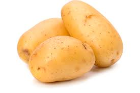

Batata

A Solanum tuberosum, comummente conhecida como batata, é uma planta perene da família das solanáceas e pertencente ao tipo fisionómico
dos terófitos.
A planta adulta, conhecida como batateira, tem geralmente entre sessenta a cem centímetros de altura, possui flores
e frutos e produz um tubérculo comestível rico em amido.
A espécie teve origem no Cordilheira dos Andes, próximo ao Lago Titicaca, e foi levada a outras regiões do mundo por colonizadores
europeus.
Atualmente são cultivadas milhares de variedades da espécie em todos os continentes e está inserida como um alimento
fundamental na cultura mundial.
A relação da batata com a batata-doce é bem pequena porque os vegetais não compartilham do mesmo
gênero ou família, fazendo parte apenas da mesma ordem.
A espécie começou a ser cultivada por civilizações andinas há cerca de oito mil anos e o cultivo foi aperfeiçoado pelos Incas, que
utilizavam, inclusive, técnicas de irrigação.
Os espanhóis introduziram, no século XVI, a espécie na Europa, e se tornou um alimento
fundamental no continente.
Entretanto a grande dependência da batata fez com que o ataque de pragas que devastam as plantações
causasse a morte de milhões de pessoas que tinham a batata como principal alimento, tal como aconteceu na Irlanda em 1845.
Atualmente, o tubérculo é o quarto alimento mais consumido do mundo, com milhares de variedades de diferentes cores, sabores e
tamanhos que são utilizadas em receitas no mundo todo. O maior produtor mundial é a China, cuja produção em conjunto com a da Índia
corresponde a mais de um terço da produção mundial.
Como qualquer cultura, as plantações estão sujeitas ao ataque de diversas espécies de bactérias, fungos e insetos que comprometem a
produtividade. Por isso, investe-se na criação de variedades mais resistentes, além da criação de batatas geneticamente modificadas,
apesar do grande temor que ainda existe sobre produtos transgénicos. O aumento da produtividade é visto, ainda, como uma solução para
acabar com a fome em diversos países. Para reconhecer a importância do tubérculo no mundo, o ano de 2008 foi intitulado o Ano
Internacional da Batata pela Organização das Nações Unidas. A batata é a base da alimentação em 160 países. Ela tem energia e é rica
em vitaminas e sais minerais.
Tipos de batatas

Nome: Batata inglesa
Descrição: Essa é aquela que todo mundo conhece. Curiosamente é chamada de monalisa ou ágata. O formato é oval, alongado e com polpa e casca clara.
É uma batata de usos diversos, mas tem teor baixo de amido.
Como pode ser preparada: Pode usar para cozinhar, fazer purês ou assar (fica melhor para assar com frango ou linguiça).

Nome: Batata doce
Descrição: Existem outros tipos, a branca, amarela, roxa. Todas possuem uma alta quantidade de fibras
e sabor um pouco mais
adocicado (umas mais e outras menos).
Como pode ser preparada: É ótima para fazer cozida, assada ou embrulha no papel alumínio e coloca direto na brasa da churrasqueira
(uma dica minha é comer junto a alguma coisa salgada, tipo um caldo, eu gosto do contraste entre o salgado e o doce).

Nome: Batata asterix
Descrição: A batata asterix é aquela de forma oval, mais comprido, com polpa clara igual a inglesa, mas casca vermelha.
É um tipo de
batata com muitas fibras e bastante amido.
Como pode ser preparada: Pode ser usada para fritar ou fazer nhoque.

Nome: Batata baraka
Descrição: Essa é uma batata que possui um aspecto sujo, pelo fato dela ser escovada ao invés de lavada com água
e por causa disso essa batata é mais seca e contém mais amido.
Como pode ser preparada: Pelo fato dela possuir menos água, ela possui um sabor mais intenso e pode ser usada para
fazer pratos com um sabor mais forte. E sobre as receitas, pode ser usada como a batata inglesa, mas ao invés de
cozinhar na água, cozinhe utilizando o forno para manter a característica do sabor forte.

Nome: Batata yacon
Descrição: Um pouco menos conhecida, mas ainda bastante apreciada por quem procura uma batata com menos teor calórico.
A batata yacon é muito utilizada no Japão para produzir macarrão e massas no geral. Por dentro é quase laranja e por fora
tem a casca mais escura.
Como pode ser preparada: Por aqui se tem o costume de comer crua em saladas, mas também pode se consumir cozida.

Nome: Batata baroa
Descrição: Ela também possui outros nomes como, por exemplo, batata mandioca e batata cenoura, mas para reconhecer
é só procurar por um vegetal de coloração bem amarela e um pouco mais comprido.
Como pode ser preparada: Por ter menos amido, pode ser usada em sopas, mas também pode cozinhar.
.
Fontes
Dani noce (clique aqui para ir pro site)
Wikipedia (clique aqui para ir pro site)
caso você tenha chegado até aqui, aperte no "Mundo das batatas" para ter uma surpresa